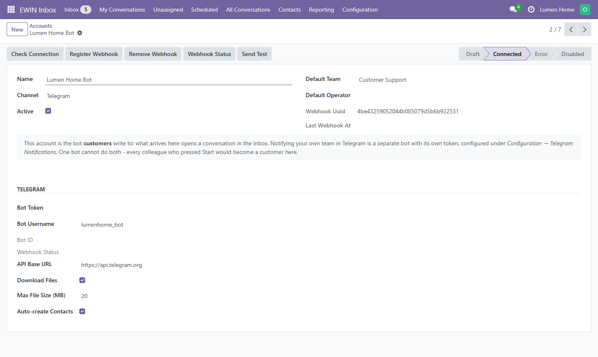

<section class="container" style="color:#24243a; font-size:16px">
  <div class="row justify-content-center">
    <div class="col-lg-10">
      <h1 class="mt-4 mb-2" style="color:#24243a; font-weight:700; font-size:40px">EWIN Inbox: Telegram</h1>
      <p class="lead mb-3" style="color:#5f5f7a">Telegram Bot connector for EWIN Inbox. Customers write to your bot; operators answer from the Odoo inbox.</p>
      <div class="mb-4"><span class="badge badge-pill badge-dark mr-1" style="font-size:13px; padding:6px 12px">Odoo 18</span><span class="badge badge-pill badge-primary mr-1" style="font-size:13px; padding:6px 12px">LGPL-3</span><span class="badge badge-pill badge-info mr-1" style="font-size:13px; padding:6px 12px">Free</span><span class="badge badge-pill badge-success mr-1" style="font-size:13px; padding:6px 12px">Tested on a live account</span></div>
      
      <div class="text-center my-4"><p class="mt-2" style="font-size:14px; color:#5f5f7a">The Telegram account form: check the connection, register the webhook, send a test.</p></div><h3 class="mt-5 mb-3" style="color:#3d34bd; font-weight:700; border-bottom:2px solid #e7e5f7; padding-bottom:8px">Highlights</h3><ul style="font-size:16px; color:#24243a"><li class="mb-2">Telegram Bot API over a webhook secured with a per-account secret, checked on every request</li><li class="mb-2">Two-way media: photos, documents, voice, video and stickers</li><li class="mb-2">Immediate send with a delivery status on each message</li><li class="mb-2">Customers matched to or created as Odoo contacts</li><li class="mb-2">Connection check, webhook registration and a test send, all from the account form</li></ul><h3 class="mt-5 mb-3" style="color:#3d34bd; font-weight:700; border-bottom:2px solid #e7e5f7; padding-bottom:8px">Requirements</h3><ul style="font-size:16px; color:#24243a"><li class="mb-2"><strong>EWIN Inbox</strong> (<code>ewin_omnichannel_core</code>) installed</li><li class="mb-2">A Telegram bot token from @BotFather</li><li class="mb-2">A public HTTPS address Telegram can reach for the webhook</li></ul><h3 class="mt-5 mb-3" style="color:#3d34bd; font-weight:700; border-bottom:2px solid #e7e5f7; padding-bottom:8px">Data and external services</h3><p style="font-size:16px">Messages, files and the customer's Telegram name and username travel between Odoo and the Telegram Bot API (<code>api.telegram.org</code>). Nothing is sent anywhere else.</p>
      <div class="card bg-light mt-5 mb-4">
        <div class="card-body" style="font-size:15px; color:#5f5f7a">
          Licensed under the GNU Lesser General Public License v3.0 (LGPL-3).
          Developed and maintained by <strong>EWIN.codes</strong>.
          Installation, configuration and custom development:
          <a href="mailto:info@ewin.codes" style="color:#3d34bd; font-weight:600">info@ewin.codes</a>
        </div>
      </div>
    </div>
  </div>
</section>
